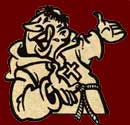

|
|
 |
Vijfwegenstraat
35 |

| Home | Ligging | Bier | Cuisine | Sfeerbeelden |
|
 OPEN
OP: Email Kroegske |
|


 BIER
BIER
|
NADINE EN DANNY BROUWEN HUN EIGEN KROEGBIER. VOOR HUN 10-JARIG BESTAAN Op vrijdag 14 april 2006 werd in het Kroegske in de Vijfwegenstraat 35 in Emelgem het eerste eigen brouwsel van Nadine en Danny, gekend als de uitbaters, voorgesteld en ontkurkt. Naar aanleiding van het 10-jarig bestaan van hun Streekbieren speciaalzaak wilden de uitbaters hun eigen bier brouwen en ook op de biermarkt brengen.
Het was zeker niet onze bedoeling een etiketbier of één of ander commercieel zoet bier te laten brouwen door een grote brouwerij in ons land. Daar we allebei de kans kregen om een brouwcursus te volgen bij Picobrouwerij Alvinne in Ingelmunster, wilden we wel eens met iets speciaals en iets volledig origineels op de proppen te komen. Als hobbybrouwers brouwen we wel eens heel kleinschalig een 15 liter proefbrouwsel voor eigen privégebruik. Daar een proefbrouwsel zo goed in onze smaak viel, werd geopteerd om ons eigen origineel ontworpen recept op een grotere schaal te brouwen.
Deze mogelijkheid kon alleen waar gemaakt worden bij onze goede vrienden van Picobrouwerij Alvinne, uit de Oostrozebekestraat 114 in Ingelmunster. We leerden de kennis van deze klasse brouwers door het volgen van de amateur brouwcursussen die ze ieder jaar organiseren. Waar konden we dan ook een betere locatie vinden dan in de grote brouwketels van deze Picobrouwerij om ons te vervolmaken, daar we volledig inspraak hadden tijdens het brouwen van ons bier. Er werd natuurlijk een oogje in het zeil gehouden door de professionaliteit van Davy en Glenn. Maar wat werd er dus ontworpen in deze ketels ? Het resultaat is subliem, we zijn echt heel tevreden met ons KROEGBIER “ GOUD “.
We kunnen onze klanten nu onze specialiteit aanbieden, nl. een lekker bitter goudblond bier met een volle malse moutsmaak en gearomatiseerd met East Kent Goldings hop voor zijn bittere smaak en afgewerkt met Saaz als final touch. Ons kroegbier GOUD heeft een diepbittere nasmaak en dit omdat we toch volledig origineel uit de hoek willen komen met ons eigen bier. Het is een heel lekker bitter doordrinkbier geworden van 6,6% alcoholvolume. Voor de kenners in de brouwtermen gaat het hier over een kleurwaarde van 12 EBC en een bitterheidsgraad van 40 EBU. Vergeet niet dat het Kroegske geen Pils, Hoegaarden, Palm, Leffe en Grimbergen serveert. Het is dan ook een heel lekker bier geworden voor de echte biergenieter juist zoals we het wilden. Het was de bedoeling een licht bier te brouwen, zodat men er enkele van achterover kan drukken.zonder dat men er zwaar dronken van wordt. Maar vergeet niet: ‘Drink met mate, maar regelmatig'. Het is dan ook het begin van een reeks Kroegbiertjes, die Nadine en Danny nog willen brouwen in de toekomst. Het volgende brouwsel wordt een donker bruin bier met een hoog alcohol volume. De voorbereidingen en het recept op punt zetten zijn reeds gestart. Aan een Tripel wordt ook al gedacht. |
|
|
|
Copyright 2014 Filip Geerts. All Rights Reserved. |